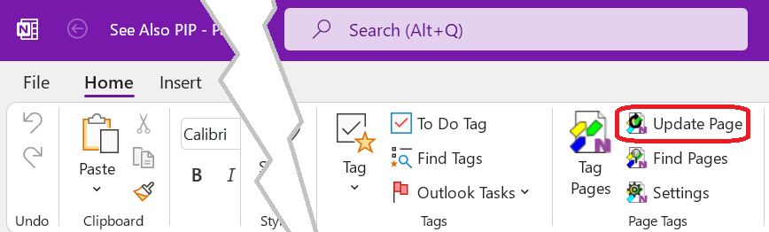

Update Current Page
A command on the import tags from the page content and update embedded Saved Search content on the page.

To update the current page, tap or click the Update Page button in the Page Tags group
of the Home tab of the OneNote ribbon. To update a range of pages use the
Update action on the
Tag Pages.
See Saved Search about saving search results to a OneNote page and keeping it up-to-date.